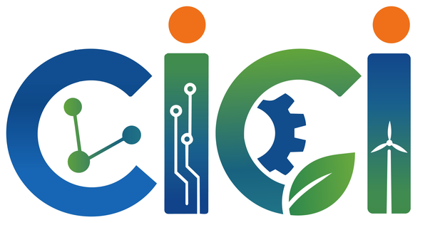

Plataforma Web Oficial Autoadministrable y Sistema de Arbitraje del Comité Científico — CICI 2027
Desarrollo integral en Laravel 12 (Arquitectura MVC) sincronizado con cici.umariana.edu.co, con gestión completa de los 16 Requerimientos Funcionales, dictamen de modalidades (Ponencia Oral / Póster), consulta pública por cédula y transición interanual 2027 → 2028.
Contexto y Portal Público
Problemática, objetivos, identidad visual institucional propia y secciones oficiales.
Comité y Consulta Cédula
Flujo de evaluación científica (Oral/Póster) y consulta sin contraseña (RF-16).
Panel Admin y Edición 2028
Autoadministración de los 16 RF, subida de logos y cambio 2027 → 2028 en 1 clic.
Arquitectura, QA y Cloud
Modelo de 16 tablas, soporte para 2.000 usuarios, 34 tests automatizados y Render.

CICI 20271. Problemática Identificada en el Congreso CICI
El Congreso Internacional de Ciencia e Ingeniería (CICI) de la Universidad Mariana requería evolucionar de una página informativa estática a un sistema de información académico, autoadministrable y escalable.
Dependencia Técnica y Procesos Manuales
- Actualización manual en código HTML: Cualquier cambio en ponentes, horarios, auditorios, tarifas o enlaces obligaba a editar archivos fuente y redesplegar manualmente.
- Ausencia de consulta en línea para autores: Quienes postulaban resúmenes no contaban con un buscador rápido por documento de identidad para verificar el estado de evaluación ni la modalidad asignada.
- Falta de módulo para el Comité Científico: El registro de calificaciones, asignación de pares evaluadores y aprobación en modalidad Ponencia Oral o Póster se gestionaba fuera del portal.
- Baja reutilización para futuras ediciones: Pasar de la edición 2027 a la edición 2028 implicaba reconstruir la interfaz y reemplazar textos fijos en múltiples vistas.
Plataforma Web Dinámica e Institucional
- 100 % Autoadministrable por Roles: Panel exclusivo para el Administrador General (
/admin) y para el Comité Científico (/comite/resumenes). - Consulta Pública por Cédula (
/estado-resumen): Sin necesidad de crear cuenta ni recordar contraseña, el autor consulta su dictamen con su número de cédula. - Fidelidad Institucional Absoluta: Conserva la identidad gráfica oficial de la Universidad Mariana (no es una plantilla genérica), integrando los documentos reales como el PDF de Términos de Referencia.
- Adaptabilidad 2027 → 2028 en 1 Clic: Permite actualizar el año, edición, fechas y logotipos institucionales desde el navegador.
2. Objetivos del Proyecto y Alcance Funcional
Desarrollar e implementar la plataforma web oficial autoadministrable del IV Congreso Internacional de Ciencia e Ingeniería (CICI 2027) de la Universidad Mariana
Integrando la divulgación académica oficial, la gestión dinámica de contenidos (RF-01 a RF-15), el módulo de evaluación del Comité Científico y la consulta pública de estado de resúmenes por documento de identidad (RF-16), bajo estándares de seguridad, usabilidad y alta concurrencia.
Portal Institucional
Construir el portal público fiel a la imagen de la Universidad Mariana con los 6 ejes temáticos, 7 ponentes internacionales, agenda de 3 días y documentos oficiales.
Comité y Cédula
Implementar el flujo de arbitraje para el Comité Científico (aprobación Oral/Póster y puntaje) y la consulta pública instantánea por número de cédula.
CMS Administrativo
Dotar al administrador de paneles intuitivos para gestionar ponentes, ejes, fechas, programa, noticias, tarifas, FAQ, aliados y transición 2027 → 2028.
Calidad y Despliegue
Garantizar 0 errores mediante 34 pruebas automatizadas (PHPUnit), caché para 2.000 usuarios concurrentes y despliegue contenedorizado en Render.
3. Identidad Visual Propia y Sincronización con cici.umariana.edu.co
A diferencia de interfaces genéricas generadas por plantillas automáticas, la plataforma implementa una hoja de estilos propia (public/css/cici.css) basada en el manual de identidad del CICI y de la Universidad Mariana.
Diseño Institucional A Medida
- Azul Mariano (
#0a2f66/#114e91): Autoridad académica y rigor científico. - Verde Sostenibilidad (
#2fae7b) y Naranja Innovación (#f07019): Acentos de los 3 pilares del logo oficial (Conocimiento, Innovación y Territorio). - Banner Hero Dinámico Sutil: Insignia con pulso en vivo, levitación suave del escudo y circuitos de ingeniería animados.
Perfiles Académicos Reales
- Dr.Plinio Bariani (EE. UU.) · Dr. Horacio Flores (EE. UU. - Kansas State Univ.)
- Dr. Mauricio Alvarado Bueno (Colombia - Univ. Santiago de Cali)
- Dra. Cathy Guevara y Dr. Diego Trejo (Ecuador - UTN)
- Dr. Samir Castilla y Dr. Marcial Reyes (México - UACJ / TecNM)
3 Jornadas y PDF Oficial
- 15 Bloques Horarios Publicados: Miércoles 14 (Apertura), Jueves 15 (Jornada Académica) y Viernes 16 de abril de 2027 (Cierre) con auditorios reales.
- Términos de Referencia (PDF): Descarga directa habilitada en Inscripciones y Documentos, junto con Formato de Resumen y Material de Difusión.
4. Consulta Pública de Estado solo con Número de Cédula
Para garantizar la máxima facilidad de uso (Usabilidad), el postulante no necesita usuario ni contraseña: ingresa a /estado-resumen, digita su cédula y visualiza en tiempo real el dictamen del Comité Científico.
Aprobado en Modalidad Póster
- Autora: Ing. Camila Andrea Rosero Burbano (Universidad Mariana).
- Línea de tiempo en 3 pasos: 1. Recibido → 2. En evaluación → 3. Dictamen emitido.
- Resultado: Muestra calificación (90/100), comentarios del evaluador y habilita el botón de descarga de la Plantilla Oficial de Póster.
Aprobado en Ponencia Oral
- Autor: Mg. Juan Sebastián Delgado Pantoja (Universidad de Nariño).
- Resultado: Informa aprobación para presentación en Ponencia Oral con calificación de 95/100.
- Acción directa: Muestra enlace directo al portal financiero SGA Campus para formalizar la inscripción del proyecto (hasta 7 autores).
En Revisión por el Comité
- Autora: Ing. Diana Marcela Benavides (Universidad del Cauca).
- Resultado: Muestra la barra de progreso en la etapa 2 (En evaluación por el Comité Científico), brindando transparencia sobre el estado del trámite.
- Búsqueda dual: Funciona tanto por número de cédula como por código de radicado (
CICI-2027-XXXX).
5. Flujo de Trabajo y Arbitraje del Comité Científico
El sistema diferencia entre el Líder del Comité Científico (comite@cici.test) y los Pares Evaluadores (evaluador@cici.test), protegiendo las rutas con el middleware IsCommittee.
Dictamen Riguroso y Modalidades
- Tablero con KPIs en vivo: Total de resúmenes, pendientes, en revisión, aprobados (desglosados en Orales y Pósteres) y rechazados.
- Filtros combinados: Por estado, eje temático, modalidad solicitada, asignación o búsqueda por cédula/nombre/título.
- Regla de negocio obligatoria: Al marcar un resumen como Aprobado, el sistema exige seleccionar si se aprueba como Ponencia Oral o como Póster; si se rechaza, limpia automáticamente la modalidad.
- Retroalimentación transparente: Lo que el evaluador escribe en Observaciones para el autor aparece inmediatamente cuando el postulante consulta con su cédula.
Coordinación por Ejes Temáticos
- Asignación de Evaluadores: El Líder del Comité Científico asigna cada resumen recibido al profesor evaluador experto en ese eje temático.
- Gestión de Integrantes del Comité: Permite registrar nuevos profesores evaluadores asociándolos a uno de los 6 ejes temáticos oficiales del congreso.
- Trazabilidad de Auditoría: La tabla
submissionsregistra quién evaluó (reviewed_by), la fecha exacta del dictamen (reviewed_at) y la fecha de notificación (notified_at).
6. Especificación y Cumplimiento de Requerimientos (RF-01 a RF-08)
| Código | Requerimiento Funcional | Implementación Técnica en la Plataforma | Estado |
|---|---|---|---|
| RF-01 | Información general e identidad del Congreso | Modelo CongressSetting y panel /admin/configuracion: edita nombre, año (2027↔2028), insignia, fechas, modalidad y logos. |
100% Cumplido |
| RF-02 | Gestión de Ejes y Líneas Temáticas | Modelos ThematicAxis y AxisTopic (/admin/ejes): administra los 6 ejes oficiales (incluido el transversal de IA) y sus 34 subtemas. |
100% Cumplido |
| RF-03 | Cronograma de Fechas Importantes | Modelo ImportantDate (/admin/fechas) + contador regresivo en tiempo real en portada sincronizado con event_start_iso. |
100% Cumplido |
| RF-04 | Programa y Agenda Académica | Modelo ScheduleItem (/admin/programa): gestiona los 15 bloques oficiales de los días 14, 15 y 16 de abril por hora, conferencista y auditorio. |
100% Cumplido |
| RF-05 | Directorio de Ponentes Invitados | Modelo Speaker (/admin/ponentes): CRUD con subida de fotografía, país, institución, perfil académico y título de ponencia. |
100% Cumplido |
| RF-06 | Modalidades de Participación y Tarifas | Modelo RegistrationFee (/admin/configuracion): administra las 4 tarifas oficiales en COP y condiciones de hasta 7 autores por proyecto. |
100% Cumplido |
| RF-07 | Descarga de Documentos y Plantillas | Modelo CongressDocument (/admin/documentos): gestiona PDF de Términos de Referencia, Formato de Resumen, Banners y estados «Próximamente». |
100% Cumplido |
| RF-08 | Publicación de Noticias y Novedades | Modelo NewsPost (/admin/noticias): CRUD de comunicados oficiales con categoría, resumen, imagen y enlace externo. |
100% Cumplido |
7. Especificación y Cumplimiento de Requerimientos (RF-09 a RF-16)
| Código | Requerimiento Funcional | Implementación Técnica en la Plataforma | Estado |
|---|---|---|---|
| RF-09 | Comité Organizador, Directivo y Científico | Modelo OrganizerMember (/admin/contenido-portal): administra los integrantes directivos, científicos y organizadores visibles en #comite. |
100% Cumplido |
| RF-10 | Galería e Histórico de Ediciones Anteriores | Modelo GalleryItem (/admin/contenido-portal): memoria histórica del I CICI (2021), II CICI (2023) y III CICI (2025) con métricas de asistentes y ponencias. |
100% Cumplido |
| RF-11 | Aliados e Instituciones Participantes | Modelo Sponsor (/admin/contenido-portal): directorio de universidades participantes (Universidad Mariana, UTN, Kansas State, UACJ, TecNM, USC). |
100% Cumplido |
| RF-12 | Preguntas Frecuentes (FAQ) | Modelo Faq (/admin/contenido-portal): preguntas y respuestas desplegables sobre postulación, consulta por cédula, pagos y certificados. |
100% Cumplido |
| RF-13 | Canales de Contacto y Mesa de Ayuda | Modelo ContactMessage: formulario público en #contacto con validación y bandeja administrativa en /admin/mensajes para responder consultas. |
100% Cumplido |
| RF-14 | Integración con Plataforma de Pagos SGA Campus | Enlace configurable (registration_url) conectado al portal oficial de inscripciones financieras SGA Campus de la Universidad Mariana. |
100% Cumplido |
| RF-15 | Panel de Administración General | Dashboard centralizado en /admin protegido por autenticación y middleware IsAdmin con indicadores en tiempo real y accesos directos. |
100% Cumplido |
| RF-16 | Flujo Comité Científico y Consulta por Cédula | Modelo Submission, panel de arbitraje en /comite/resumenes y buscador público instantáneo por documento de identidad en /estado-resumen. |
100% Cumplido |
8. Transición Completa de 2027 a 2028 y Subida de Logos desde Admin
Para que la Universidad Mariana reutilice la plataforma en CICI 2028 (V Edición) y años posteriores sin depender de programadores, diseñamos un motor de identidad dinámica en /admin/configuracion.
Cambio Instantáneo en 1 Clic
- Incluye el botón rápido «⚡ Autocompletar ejemplo CICI 2028 (V Edición)» para demostrar en vivo la transición completa.
- Actualiza simultáneamente la barra de navegación, el título del navegador, el banner principal, las 3 tarjetas de jornadas del programa, inscripciones, documentos y pie de página.
Gestión de Archivos Gráficos
- El administrador puede subir un nuevo Logo Principal Blanco (PNG/SVG/WebP) para el Banner y el Footer, y un nuevo Logo Sigla para la barra superior.
- Se almacenan directamente en
public/images/custom/para que funcionen en cualquier servidor sin depender de enlaces simbólicos.
Adaptación Automática del Año
- Como la imagen original
logo-blanco.pngtiene dibujado el número2027en sus píxeles, si el administrador cambia el año a2028sin subir aún un PNG nuevo, el sistema genera automáticamente el bloque de identidad oficial con la sigla CICI + 2028 + V Congreso Internacional...
9. Arquitectura en Capas (Laravel 12 MVC + Caché + Seguridad)
Vistas Blade y CSS
- Plantillas modulares (
layouts/cici,navbar,footer). - Diseño responsive móvil/escritorio en
cici.css. - Formularios protegidos con tokens
@csrf.
Middlewares Activos
IsAdmin: Protege todas las rutas/admin/*.IsCommittee: Protege/comite/*.SecurityHeaders: InyectaX-Frame-Options,nosniffyReferrer-Policy.
Controladores y Caché
- 14 Controladores especializados (Públicos, Comité y Admin).
PortalCache: Consolida la carga de portada en caché con invalidación automática por eventos.
Eloquent y Motor SQL
- 15 Modelos Eloquent con relaciones tipadas.
- Compatible al 100 % con PostgreSQL (Render/Producción) y SQLite (Local).
¿Cómo soporta la plataforma picos de 2.000 personas inscritas concurrentes?
1) La portada pública se sirve desde PortalCache en memoria sin repetir las 12 consultas SQL en cada visita, y AppServiceProvider limpia la caché automáticamente en el instante en que el Admin edita cualquier dato. 2) La migración 2026_10_20_110000 añade índices compuestos en submissions(document, status) para que la consulta por cédula responda en menos de 5 milisegundos.
10. Estructura de la Base de Datos Relacional (16 Tablas)
El esquema de base de datos está organizado en 4 dominios cohesivos con integridad referencial (llaves foráneas con cascadeOnDelete y nullOnDelete):
Seguridad y Accesos
users: Almacena Administrador (is_admin), Líder de Comité (is_committee_leader) y Evaluadores (is_committee,thematic_axis_id).sessions/cache/jobs: Tablas de infraestructura del framework.
Resúmenes y Dictamen
submissions: Radicado único (tracking_code), documento indexado (document), datos del autor, coautores,thematic_axis_id,axis_topic_id,requested_modality,status,modalityaprobada (Oral/Póster),scorey auditoría.
Ejes, Ponentes y Agenda
thematic_axes(6 ejes) Relación 1:N conaxis_topics(34 subtemas).speakers(7 ponentes): Fotos con resolución inteligente local/storage.important_dates: Hitos del congreso.schedule_items: 15 bloques horarios.
CMS Institucional
congress_settings: Parámetros clave-valor (año, logos, enlaces).registration_fees: Tarifas COP.congress_documents: PDFs y plantillas.news_posts,organizer_members,gallery_items,sponsors,faqs,contact_messages.
11. Verificación de Calidad (34 Tests) y Despliegue en Render
Suite de Pruebas Automatizadas (PHPUnit)
- Pruebas de Autenticación y Seguridad (24 tests): Inicio de sesión, bloqueo de credenciales inválidas, recuperación de clave, perfil y cabeceras HTTP seguras.
- Pruebas del Comité Científico y Cédula (6 tests): Envío de resumen, bloqueo a usuarios sin rol, obligatoriedad de elegir modalidad Oral o Póster al aprobar, limpieza al rechazar y consulta pública solo con cédula.
- Pruebas de Módulos Administrativos y Caché (4 tests): Creación de líderes de comité, CRUD de programa/documentos/noticias/tarifas, formulario de contacto e invalidación automática de
PortalCache.
Despliegue Automatizado sin Fricción
DockerfileMultietapa: Compila dependencias Composer (PHP 8.4 + Apache) y activos frontend Vite (Node 22) en una imagen lista para producción.docker/entrypoint.shInteligente: Detecta automáticamente si existeDB_URL(PostgreSQL en Render) o si debe operar con SQLite, ejecuta migraciones y corre los seeders oficiales.- Autoprotección en Login y Portada: Si la base de datos en la nube está recién creada, el sistema garantiza automáticamente las cuentas
admin@cici.testycomite@cici.test.
12. Orden de la Demostración en Vivo del Software
Cada integrante realiza una demostración práctica en vivo para evidenciar el dominio completo del sistema ante el jurado:
Portal Público Oficial
- Muestra el banner animado y el contador regresivo.
- Recorre los 6 ejes y los 7 ponentes (abre el perfil del Dr. Mauricio Alvarado Bueno).
- Despliega las 3 jornadas del programa y abre el PDF de Términos de Referencia.
Cédula y Comité
- En
/estado-resumenconsulta la cédula1085200101(Aprobado Póster) y1085200202(Oral). - Inicia sesión como
comite@cici.testen/comite/resumenesy aprueba el resumen1085200303asignándole modalidad y puntaje.
Admin y Cambio a 2028
- Inicia sesión como
admin@cici.testen/adminy muestra los módulos RF-01 a RF-16. - En
/admin/configuracionpulsa «⚡ Autocompletar ejemplo CICI 2028», guarda y muestra cómo toda la web cambia a 2028 (y la restaura a 2027).
Pruebas, BD y Nube
- Muestra el Diagrama Entidad-Relación de las 16 tablas en la documentación.
- Muestra en terminal los 34 tests pasando en verde y el portal desplegado en vivo en Render.
Conclusiones e Impacto para la Facultad de Ingeniería
16 de 16 Requerimientos
El software resuelve integralmente la necesidad de la Facultad de Ingeniería, unificando divulgación oficial, arbitraje del Comité Científico y consulta pública por cédula.
Cero Dependencia de Código
El Comité Organizador puede actualizar ponentes, agenda, PDFs, tarifas, logos y cambiar de edición anual directamente desde el navegador.
Listo para Producción
Respaldado por 34 pruebas automatizadas, arquitectura de caché para 2.000 usuarios concurrentes, contenedor Docker y documentación técnica completa.
¡Muchas gracias al jurado evaluador! Quedamos atentos a sus preguntas y a la demostración en vivo.